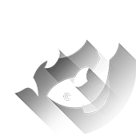

Рыбы
Февраль 20 - Март 20
Самое замечательное в правде то, что ее легко запомнить. Ужасно видеть, как кто-то говорит одну ложь, в результате чего приходится выдумывать другую, потому что человек не может вспомнить всех деталей первой. "Паутина лжи" - очень яркий визуальный образ. Но Вам не о чем беспокоиться. Теперь Вы вооружены правдой. Пока Вы придерживаетесь и поддерживаете ее, Вы легко преодолеете проблему.